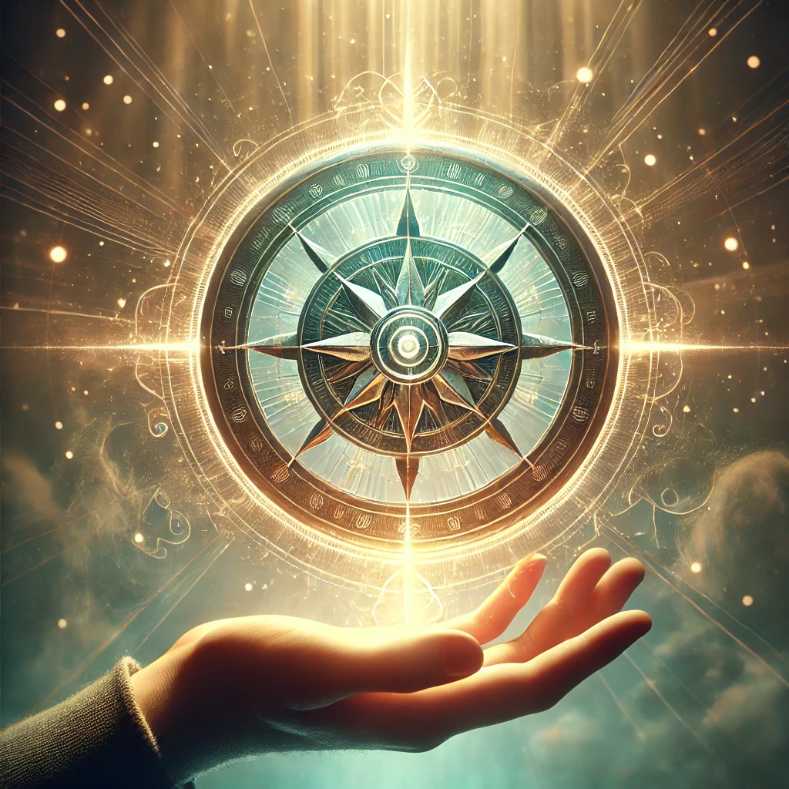

The compass rests in your hand, its intricate glyphs glowing faintly as though it is waiting for your command. With a deep breath, you focus your intent, letting the energy of your thoughts flow into the ancient device. The compass begins to hum softly, its glow intensifying until it illuminates the entire space around you.
The voice of the unseen resonates in your mind, calm yet powerful:
“The compass responds not to force, but to alignment. Your intent shapes its purpose, your focus guides its path. What will you seek as its light awakens?”
The light from the compass forms three beams, each pointing toward a different direction and vibrating with distinct energy. Each path calls to a different part of your journey.

Which path will you follow?